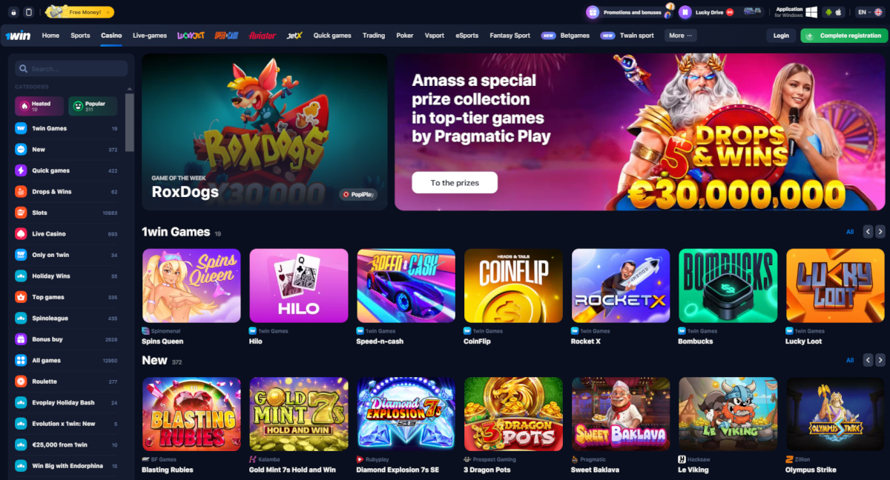
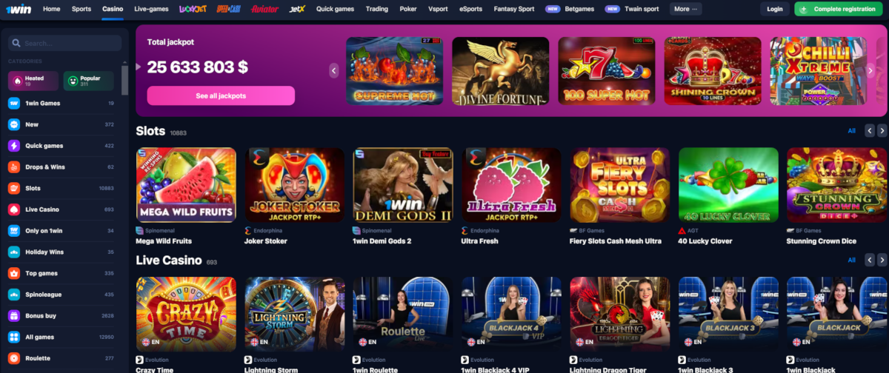
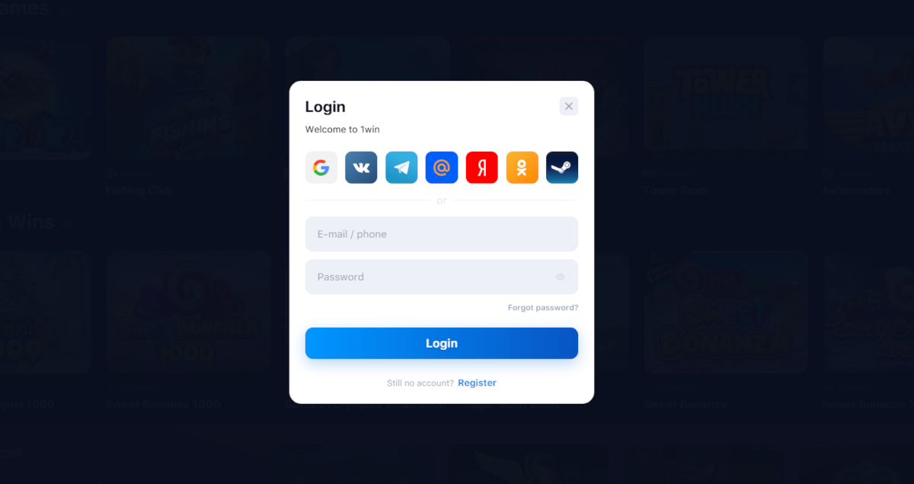
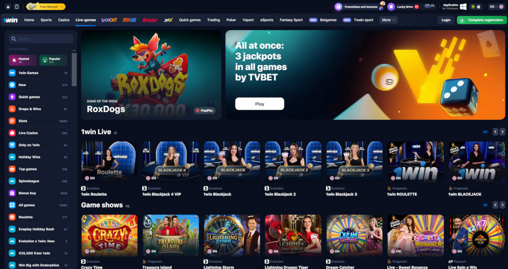

1Win Casino Experience Exciting Games and Big Wins Today
Online gambling keeps growing worldwide, and Tanzania is no exception. Among the platforms gaining attention, 1win casino stands out.
Whether you're into slots, live dealer games, or sports betting, it claims to offer a streamlined experience with a mix of modern features and promotions.
But does it actually deliver? Let’s go through the details and see how it stacks up.

GOL51Win Casino
1win casino operates as an international online gaming platform, providing access to casino games, sports betting, and live dealer tables. The platform is designed to work across multiple devices, including desktops and mobile phones.
Tanzanian players can register, deposit, and withdraw in local-friendly payment methods, making it convenient to use. With a range of slots, table games, and a live casino, the site caters to different types of gamblers. The sportsbook section also covers various international and local events.
What makes 1win online casino appealing is its user-friendly layout and a straightforward sign-up process. With a focus on simplicity, even new players can navigate through the platform without much trouble.
1-Win Casino Information
📌 Category | ℹ️ Details |
|---|---|
🏢 Company | 1 Win |
📅 Founded | 2016 |
💵 Minimum Bet | Depends on the game, starting from $0.10 |
💰 Maximum Bet | Varies by game and provider |
📱 Mobile App | Available for Android and iOS |
🌍 Supported Countries | Tanzania and multiple international regions |
💳 Deposit Methods | Mobile payments, bank transfers, e-wallets, cryptocurrency |
💸 Withdrawal Methods | Bank transfers, mobile money, cryptocurrency, e-wallets |
🎁 Welcome Bonus | Available for new players, changes periodically |
📞 Customer Support | Live chat, email, online help center |
1Win Casino Features
Several factors contribute to the popularity of casino 1win in Tanzania. Some key features include:
- Wide Game Selection – Slots, table games, live dealer options, and sports betting in one place.
- Local Payment Options – Tanzanian players can use mobile payment methods, bank transfers, and e-wallets.
- Welcome Bonus and Promotions – New and existing users can claim various bonuses.
- Mobile Compatibility – The 1win casino app ensures a seamless gaming experience on smartphones.
- Live Casino – Real-time dealer games provide an immersive casino atmosphere.
- Fast Registration – A quick sign-up process makes it easy to start playing.
These features contribute to an accessible and diverse gaming experience for both casual and serious players.
1Win Casino Pros and Cons
Like any online platform, 1win online casino has its strengths and weaknesses.
✅ Pros | ❌ Cons |
|---|---|
🎰 Wide game selection | ⏳ Slow withdrawals for some methods |
⚽ Sports betting available | 💬 Limited customer support |
💰 Local payment options | 🔍 Verification delays withdrawals |
📱 Smooth 1 win casino app | 🎯 High wagering on some bonuses |
🎁 Big 1win casino bonus | 💵 Not all withdrawals are instant |
While the pros outweigh the cons for most users, the platform could improve in certain areas to enhance the overall experience.

1Win Casino Bonuses
A major draw for new and returning players is the range of promotions and bonuses available.
- Welcome Bonus: New players receive a 1win casino bonus upon their first deposit, often in the form of a percentage match. This allows for additional funds to explore different games.
- Deposit Bonuses: Regular deposit offers provide extra value for players who continue to fund their accounts.
- Free Spins: Some slot promotions grant free spins, adding an extra chance to win.
- Cashback Offers: Occasionally, bonus casino 1win promotions include cashback on losses.
- Special Event Bonuses: Seasonal and tournament-based promotions offer additional prizes.
These offers change over time, so it's worth checking the promotions page frequently to stay updated.
1Win Casino Registration
Creating an account at 1win casino is straightforward, even for beginners. The platform ensures a quick sign-up process that takes only a few minutes.
To register, follow these steps:
- Visit the official 1win website.
- Click on the “Sign Up” button.
- Choose between registration via email, social media, or a one-click option.
- Fill in the required details, such as phone number, email, and password.
- Select the preferred currency (Tanzanian players can choose local options).
- Confirm the registration through the provided verification link or SMS code.
Once the account is set up, players can access the full range of casino games and sports betting options.
1Win Casino Login
After registering, logging into casino 1win is a simple process. Players can access their accounts from a desktop or mobile device.
To log in:
- Go to the website or open the app.
- Click on the “Log In” button.
- Enter the registered email or phone number along with the password.
- Click “Submit” to access the account.
If a player forgets their password, a reset link can be requested through email or SMS. The platform ensures a secure login process to protect user accounts.

Deposits and Withdrawals
One of the key aspects of any online casino is how smoothly financial transactions work. 1win online casino offers various deposit and withdrawal methods to accommodate Tanzanian players.
Deposit Methods:
- Mobile payments
- Bank transfers
- E-wallets
- Cryptocurrencies
Deposits are usually processed instantly, allowing players to start playing right away.
Withdrawal Methods:
- Bank transfers
- Mobile money services
- Cryptocurrencies
- E-wallets
Withdrawal times depend on the method used. Bank transfers and mobile payments may take longer than crypto transactions. Players should verify their accounts before requesting a withdrawal to avoid delays.
1Win Casino App
For those who prefer gaming on the go, the 1 win casino app provides a mobile-friendly experience with full functionality. The app mirrors the desktop version, allowing access to slots, table games, and live dealer options.
Benefits of the app:
- Optimized for smooth gameplay without lags.
- Easy access to deposits, withdrawals, and promotions.
- Push notifications for new offers and game updates.
- Works on both Android and iOS devices.
How to Download and Install:
- Visit the official website.
- Navigate to the mobile section.
- Download the app for Android (APP file) or follow the iOS installation instructions.
- Allow installation from unknown sources (for Android users).
- Open the app and log in to start playing.
The 1win app makes gaming more convenient, ensuring players can access their favorite games anytime.

Providers and Games
A strong game selection depends on the quality of providers, and 1win casino collaborates with some of the best in the industry. The platform offers a variety of games from leading software developers, ensuring a diverse and engaging experience for players in Tanzania.
Game Providers:
The platform features titles from major gaming studios, including:
- Pragmatic Play
- NetEnt
- Microgaming
- Play’n GO
- Evolution Gaming (for live dealer games)
- Yggdrasil
These developers are known for high-quality graphics, smooth gameplay, and fair odds.
Types of Games Available:
- Slots: A wide range of slot games, including classic, video, and jackpot slots.
- Table Games: Blackjack, roulette, baccarat, and poker variations.
- Live Casino: Real-time games with professional dealers.
- Sports Betting: A separate section for betting on football, basketball, and other sports.
Players in Tanzania can enjoy a mix of classic and modern casino experiences with secure and fair gaming practices.
Author’s Opinion
After spending time exploring 1 win casino, I can say it delivers on its promise of variety and accessibility. The platform has an extensive selection of games, from slots to live dealer tables, and the inclusion of sports betting makes it a well-rounded option.
The mobile experience, especially with the 1win casino app, is smooth and user-friendly, allowing players to stay engaged on the go.
One downside is that some withdrawal methods can take longer to process, especially compared to cryptocurrency transactions. For Tanzanian players looking for a convenient and diverse gaming platform, this casino remains a solid choice.
FAQ
How do I create an account?
Click on the registration button, fill in the required details, and confirm your account via email or SMS.
What payment methods are available?
Deposits and withdrawals can be made through mobile money, bank transfers, e-wallets, and cryptocurrencies.
Can I play on mobile?
Yes, the mobile site and app provide full access to games and account features.
How long do withdrawals take?
Processing times depend on the method used. Bank transfers may take longer than e-wallets or crypto.
Is customer support available?
Yes, support is available via live chat, email, and phone, depending on the region.